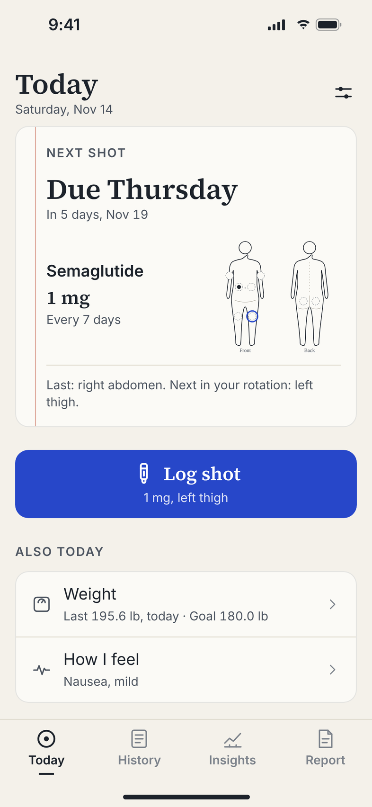
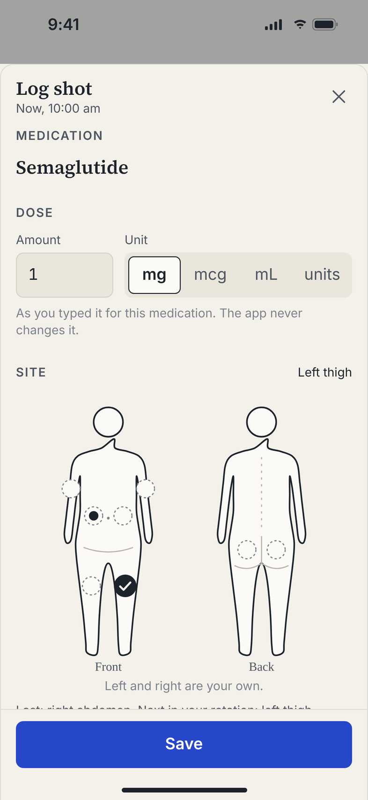
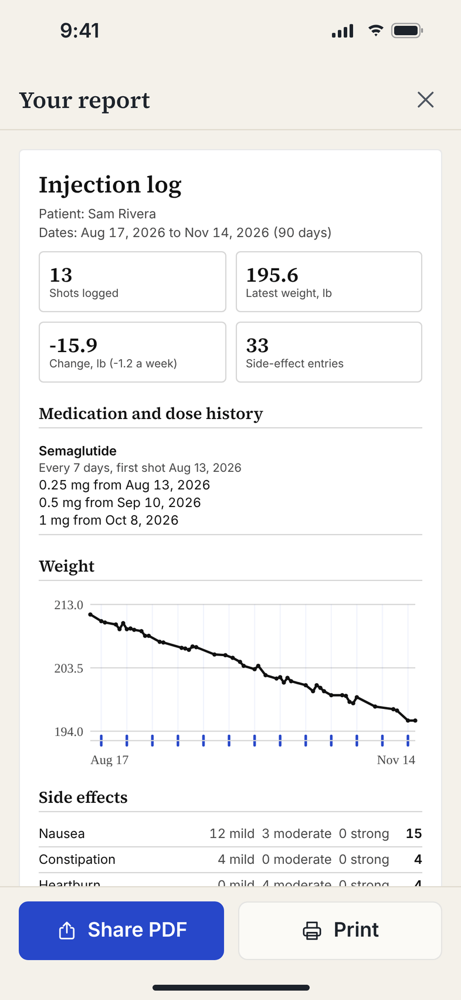

Shot Log: a peptide and GLP-1 shot tracker, with a protein and weight log
Log a shot in seconds with the dose and the site. Always know when the next one is due and where it goes in your own rotation. See your weight and how you feel against your shots, and bring your prescriber a clean record. It works offline, and nothing leaves your phone.
Download on the App StoreFor iPhone. Logging your shots is free. Shot Log Pro adds trends, the report and more.



What it does
Private by design
Everything stays on your iPhone. No account, no sign-in, no uploads, no ads, and it works in airplane mode.
Shot Log is a personal log. It does not diagnose, treat, calculate doses or give medical advice. Follow your prescriber about your medication and your doses.
Questions
How do I log a shot?
Open the app and tap Log shot. The sheet opens with your medication, its current dose and the next site in your rotation already filled in, so Save is the only tap you need. Change anything first if you like: the dose, the site on the body map, or the time if you took it earlier. Shots you forgot can be added from History with the date and time.
Does it remind me?
Yes, if you want it to. After your first shot the app asks once whether to remind you. The reminder is a notification on the due day at the time you choose, 9 am unless you change it, and it has a button to remind you again in an hour. It follows your schedule, every few days or on chosen weekdays. Reminders are made on your iPhone; nothing comes from a server.
Does it rotate injection sites?
It remembers the order you use. Each time you log a shot you tap the site on a simple body map: abdomen, thighs, upper arms or glutes, left or right. The app learns your own rotation for each medication and shows the next one, in plain words: Last: left abdomen. Next in your rotation: right abdomen. It never says a site is right or wrong; follow what your prescriber told you.
Is my data uploaded anywhere?
No. Everything you log stays on your iPhone. There is no account, no sign-in, no analytics, no ads and no server, and it works in airplane mode. The report and the CSV are made on the phone and go only where you send them. The privacy policy has the details.
What does Pro cost?
Logging shots for one medication, the next-due line, one reminder, weight, how you feel and the last 30 days of history are free, always. Shot Log Pro adds more than one medication, weight trends with your shots marked, side-effect patterns, site history, protein and water, the report for your prescriber with the CSV, and your whole history. It is $6.99 a week with 3 days free for new subscribers, $39.99 a year, or $79.99 once for life. Prices are in US dollars and can differ by country.